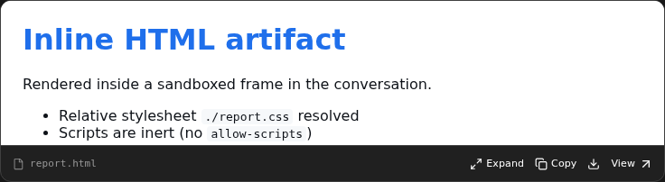
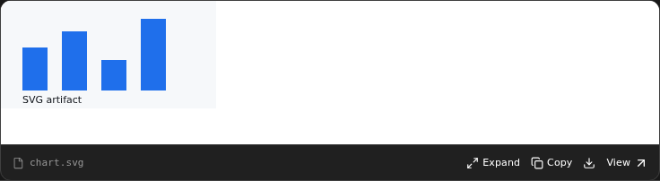
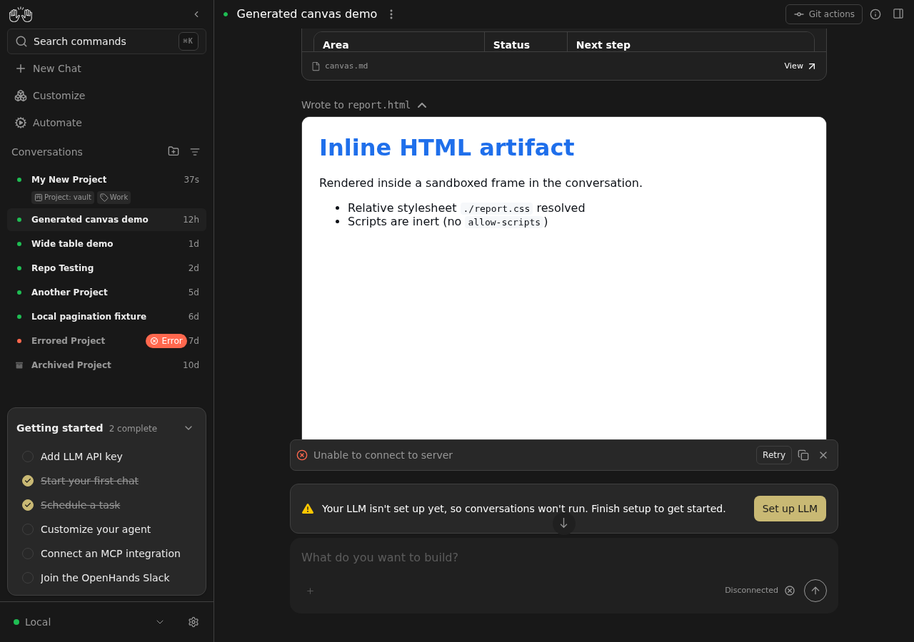

Today only Markdown files get a rich inline preview. Every other artifact —
including the HTML and SVG the agent just wrote — is dumped into a
CodeBlock as source text. This PR adds a sandboxed live preview
for HTML/SVG, reusing the Markdown card's pattern instead of inventing a
second one.
★ What a reviewer should know first.
The preview is a
<iframe sandbox="allow-same-origin">
pointed at the workspace static URL. It has
no allow-scripts, so agent-written
<script> and inline handlers stay inert — verified in a real
browser below (the console logs
Blocked script execution … 'allow-scripts' permission is not set
and the heading is unchanged). Rendering from a real URL, not a
data: URI, is what lets relative ./style.css resolve
(the long-standing bug #15752). Everything else is additive: one new util, one
new primitive, and a shared event-reader extracted from the Markdown card.
A file-editor create event whose path ends in .html,
.htm or .svg now renders an inline card with a
height-clipped, sandboxed live preview plus Expand,
View, Copy and Download actions
— mirroring the Markdown artifact card shipped in #16185. Markdown behavior is
unchanged; the Markdown card was refactored to share the same plumbing.
The Markdown card owned both the renderer and the "is this event an artifact create?" predicate. The second preview type needs that predicate too, so it moved to a shared helper and now spans the artifact allowlist instead of Markdown only. This is the only signature change in the PR.
export function isMarkdownFileEditorEvent( event, correspondingAction? ): boolean { // path + command === "create" && // isMarkdownFilePath(path) }
Markdown-only. HTML/SVG return false.
export function isPreviewableFileEditorEvent( event, correspondingAction? ): boolean { // path + command === "create" && // isPreviewableArtifactPath(path) } /** @deprecated alias kept for callers */ export const isMarkdownFileEditorEvent = isPreviewableFileEditorEvent;
Markdown or HTML/SVG. Old name still exported, so no consumer breaks.
The allowlist itself is the second small addition —
FRAME_PREVIEW_EXTS = { html, htm, svg }
— kept deliberately tiny, with a comment saying why: these are formats a browser
can render from a URL, and anything else stays on the CodeBlock/DiffView path.
No "before": this file did not exist. Its role is to render one artifact.
Props are { content, path, staticUrl, query, onView }. The frame
body is gated on staticUrl && inView, so the iframe is only
created once the card has intersected the viewport; until then a loading /
error placeholder occupies the same box, which keeps the card height stable and
avoids layout shift.
// artifact-preview.tsx:118-135 {staticUrl && inView ? ( <iframe title={path} src={staticUrl} // allow-same-origin → relative <link>/<img> resolve // no allow-scripts → agent <script> stays inert sandbox="allow-same-origin" data-testid="artifact-preview-frame" /> ) : ( <Pending /> )}
allow-same-origin without allow-scripts is the safe pairing
allow-same-origin alone lets the framed document keep the
fileserver origin so its own relative subresources load, but without
allow-scripts the browser refuses to execute scripts in that
origin — so the agent's markup cannot reach the app's localStorage,
session keys, or parent DOM. This mirrors the posture already used by
FileContentViewer for the Files drawer, so the two preview paths
agree.
renderFileContent() previously had a single Markdown branch; it now has two.
if (path && command === "create" && isMarkdownFilePath(path)) { return { chip: null, body: <MarkdownFilePreview … /> }; } return { chip, body: <CodeBlock … /> };
if (path && command === "create" && isMarkdownFilePath(path)) { … } // HTML/SVG → live sandboxed frame if (path && command === "create" && isFramePreviewablePath(path)) { return { chip: null, body: <ArtifactPreview … /> }; }
Both artifact branches set chip: null: the card owns its own
filename affordance, so the separate path chip is suppressed to avoid showing
the filename twice.
Mechanical in shape: both call sites swap
isMarkdownFileEditorEvent → isPreviewableFileEditorEvent
(group-events.ts:34,
wrapper:107).
The behavior change is intentional and load-bearing: an HTML/SVG create is
now a group-breaker and starts expanded, exactly as Markdown creates already do —
otherwise the clipped preview would be hidden inside a collapsed action group.
The Markdown renderer is untouched. What moved out is the shared reader
(path/command resolution) into file-editor-event.ts, so
both cards resolve an event identically — including the case where an
observation omits path or command and the originating
action has to be consulted. That is why the file shows −104 lines
while gaining no new behavior.
.pr/capture-17818.mjs (committed with this PR) reproduces every
value below. All of the below is from the running app in mock mode
(npm run dev:mock, mock API, no LLM). The demo conversation fixture
now creates a .md, a .html (with a sibling
./report.css) and a .svg, so the flow is reviewable
without a live stack. The driver routes the two frame URLs to the same bytes the
app's own mock serves, because MSW is a service worker and does not intercept an
iframe's document navigation.

./report.css resolved; it still reads
“Inline HTML artifact”, not “SCRIPT RAN”.


| Observation | Value | Proves |
|---|---|---|
| cards / frames rendered | 2 / 2 | one card per HTML and SVG create |
sandbox attribute | allow-same-origin | no allow-scripts |
HTML frame <h1> | "Inline HTML artifact" | agent script did not run |
HTML <h1> colour | rgb(31,111,235) | ./report.css resolved |
| SVG frame root tag | svg | SVG renders as a document, not text |
| collapsed → expanded height | 160 → 512 px | Expand works |
| frame request URLs | …/workspace/report.html?v=2 | real workspace URL, not data: |
| console during load | Blocked script execution… | sandbox is enforced by the browser |
| HTTP responses for frames | 200 | no error path exercised |
npm ci
npm run dev:mock -- --port 3001
# the demo conversation creates canvas.md, report.html (+ report.css) and chart.svg
OUT_DIR=.pr node .pr/capture-17818.mjs # prints the JSON probed above
{html, htm, svg} + Markdown stay on the
CodeBlock/DiffView path.
Temporary review aid. Lives in .pr/ on the PR branch only; the
PR Artifacts workflow removes it after approval.